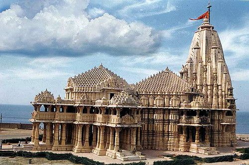

Akshardham Temple

Description: Akshardham, located in Delhi, India, is a magnificent Hindu temple complex renowned for its intricate architecture and cultural exhibits.
Ayodhya Ram Mandir

Description: Ayodhya is a sacred city in Uttar Pradesh, India, revered as the birthplace of Lord Rama and a significant pilgrimage site for Hindus.
Badrinath Temple
Description: Badrinath, in Uttarakhand, India, is a sacred town housing the Badrinath Temple dedicated to Lord Vishnu.
Chenna Kesava Temple
Description: The Chennakesava Temple, located in Belur, Karnataka, is a masterpiece of Hoysala architecture dedicated to Lord Vishnu.
Kashi Vishwanath Temple

Description: Kashi, also known as Varanasi, is an ancient city in India, renowned for its spiritual significance and sacred Ghats.
Lingaraj Temple
Description: The Lingaraj Temple, situated in Bhubaneswar, Odisha, is a revered Hindu shrine dedicated to Lord Shiva.
Meenakshi Amman Temple
Description: Meenakshi Temple in Madurai, India, boasts intricate Dravidian architecture and vibrant sculptures dedicated to Hindu deities.
Padmanabha Swamy Temple

Description: Padmanabhaswamy Temple, located in Thiruvananthapuram, Kerala, is a sacred Hindu shrine known for its grand architecture and deity Lord Padmanabhaswamy.
Puri Jagannath Temple

Description: Puri is a coastal city in Odisha, India, renowned for its historic Jagannath Temple and vibrant beach.
Rameswaram Temple
Description: Rameswaram Temple, situated in Tamil Nadu, India, is a sacred Hindu pilgrimage site known for its architectural significance.
Siddhi Vinayak Temple
Description: Siddhivinayak Temple, located in Mumbai, India, is a revered Hindu shrine dedicated to Lord Ganesha.
Somnath Temple
Description: Somnath Temple, situated in Gujarat, India, is a sacred Hindu pilgrimage site dedicated to Lord Shiva.
Sri Ranganathaswamy Temple
Description: Ranganatha Swamy Temple is a prominent Hindu shrine in Srirangam, Tamil Nadu, dedicated to Lord Ranganatha, a form of Lord Vishnu.